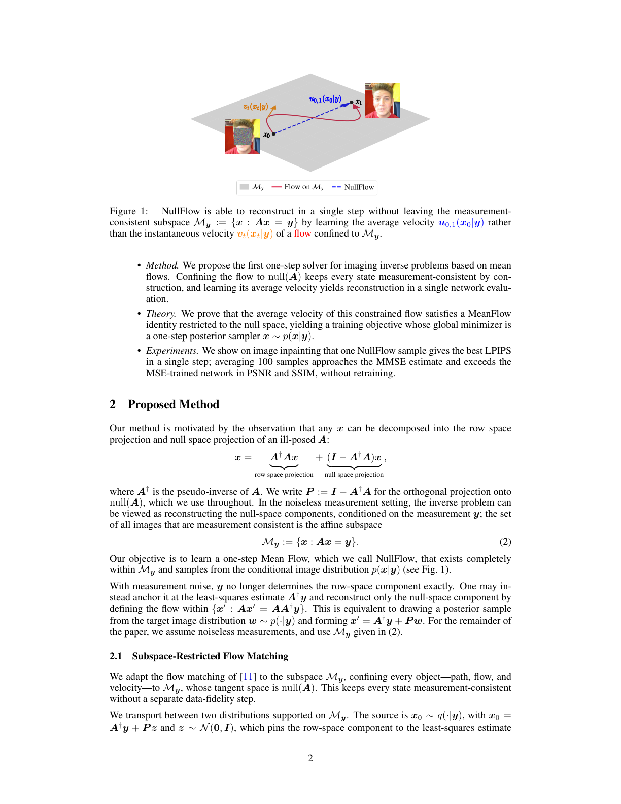
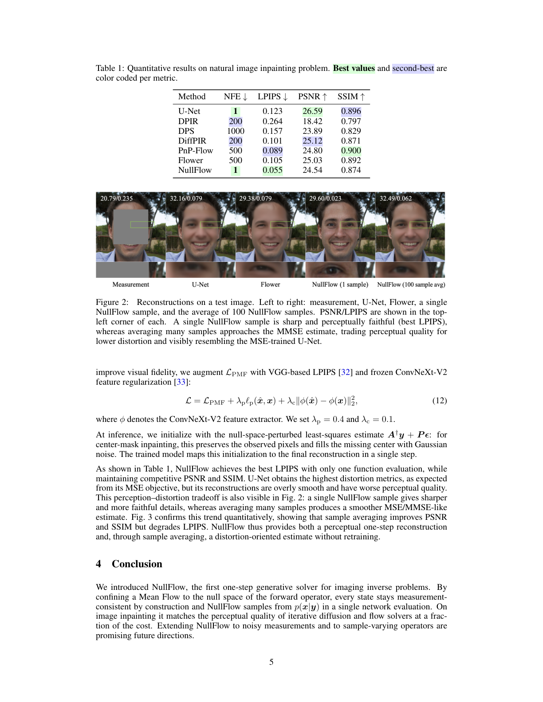
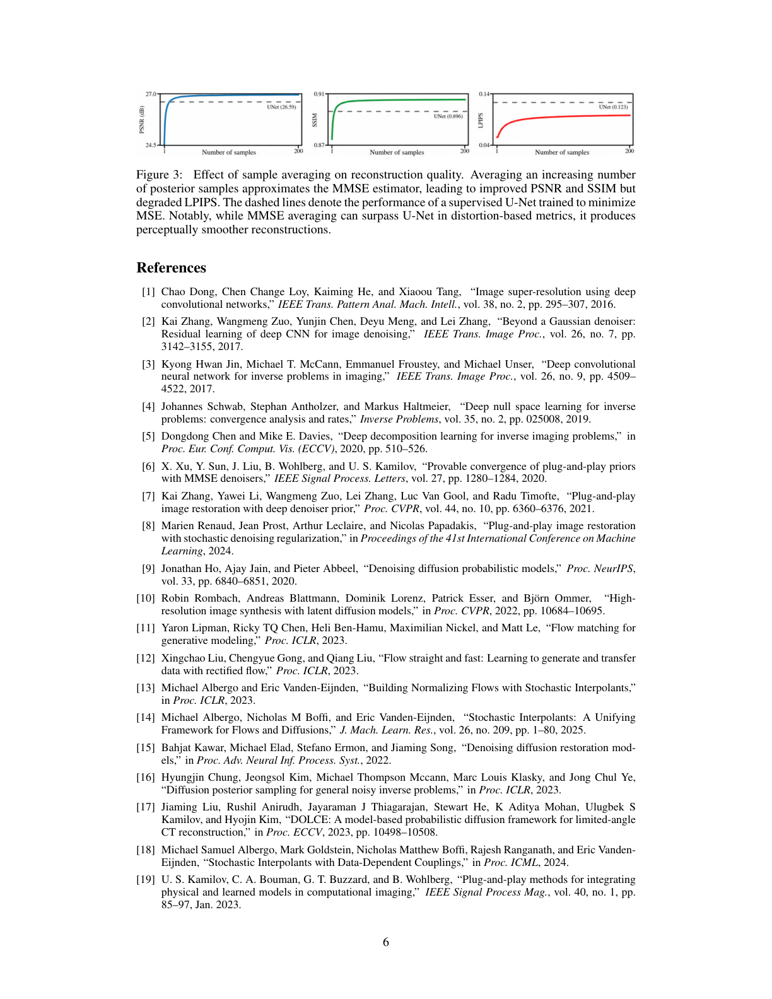

Abstract
We propose NullFlow, a principled framework for one-step generative image reconstruction. The key idea is to confine the generative flow to a measurement-consistent subspace. Because the flow never leaves this subspace, NullFlow needs no separate data-fidelity corrections, unlike existing solvers. NullFlow samples in a single network evaluation by learning the flow's average velocity, avoiding the step-by-step integration of traditional flow matching methods.
Overview

NullFlow reconstructs images without leaving the measurement-consistent subspace. Instead of learning an instantaneous velocity and integrating it over many steps, it learns the average velocity of a flow confined to the null space of the forward operator. This enables posterior sampling with a single network evaluation.
Key Idea
For an ill-posed linear inverse problem, the image can be decomposed into a measured row-space component and an unobserved null-space component. NullFlow keeps the row-space component fixed and learns to generate plausible null-space content conditioned on the measurement.
Measurement-consistent subspace:
My = { x : Ax = y }
Since all generated states remain inside this affine subspace, NullFlow is measurement-consistent by construction and does not require additional projection or data-consistency correction steps during inference.
Numerical Results
On FFHQ center-mask image inpainting, NullFlow achieves strong perceptual reconstruction quality with only one function evaluation. A single NullFlow sample gives sharp perceptual reconstructions, while averaging many samples approaches the MMSE estimate and improves distortion-oriented metrics.
| Method | NFE ↓ | LPIPS ↓ | PSNR ↑ | SSIM ↑ |
|---|---|---|---|---|
| U-Net | 1 | 0.123 | 26.59 | 0.896 |
| DPIR | 200 | 0.264 | 18.42 | 0.797 |
| DPS | 1000 | 0.157 | 23.89 | 0.829 |
| DiffPIR | 200 | 0.101 | 25.12 | 0.871 |
| PnP-Flow | 500 | 0.089 | 24.80 | 0.900 |
| Flower | 500 | 0.105 | 25.03 | 0.892 |
| NullFlow | 1 | 0.055 | 24.54 | 0.874 |


BibTeX
@article{shi2026nullflow,
title = {NullFlow: One-Step Generative Reconstruction},
author = {Shi, Xiao and Chandler, Edward P. and Park, Chicago Y. and Shoushtari, Shirin and Kamilov, Ulugbek S.},
journal = {Preprint},
year = {2026}
}